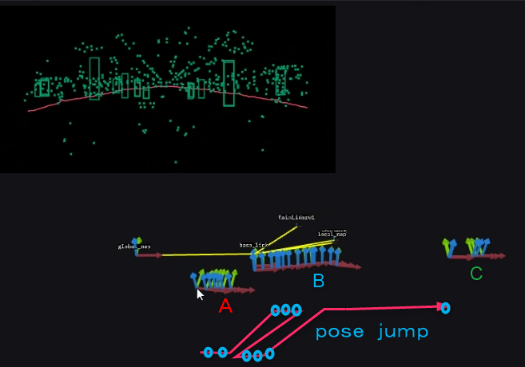
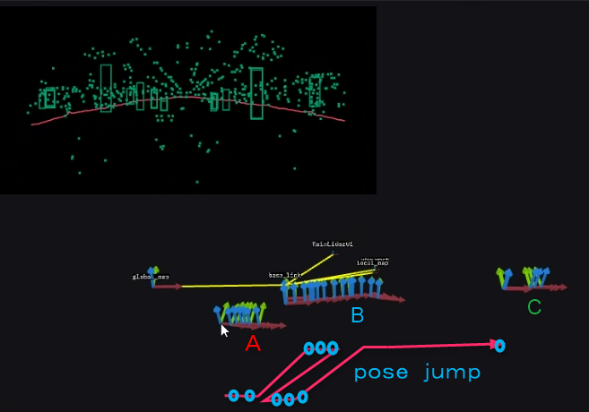
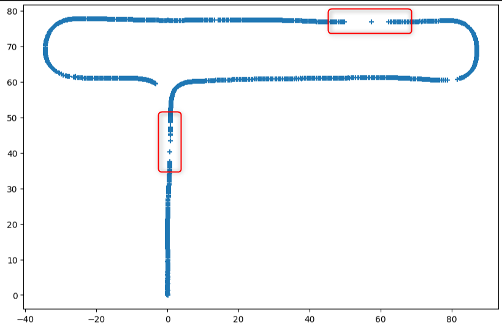
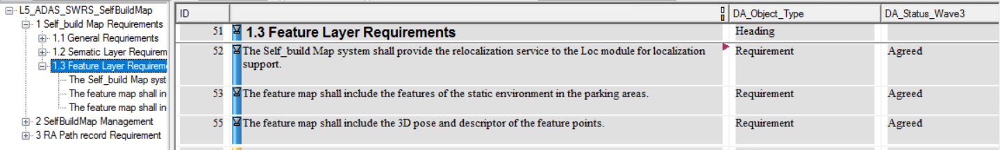

Feature reloc limitations
About the performance and limitations of feature regulation functions.
In the recent joint adjustment, some of the USE CAE on Feature RELOC, there are some confuses, here to clarify.
background
In the initial solution design of the Onboard Mapping module, in the Training stage, Feature Layer provides the optimized position and loop detection to Semantic Layer.
During the RePlay stage, the Feature RELOC can help HPA positioning of Loc Init.Therefore, the Feature RELOC output interface was opened to the LOC module to provide Initialization of Supplementary information 。
Performance and limitations
Feature RELOC relies on the number of Feature Points in the scenario, the re -examination rate of the feature point, and the description of the discrimination, and the performance fluctuates in different scenarios.Factors affecting Feature RELOC are:
The degree of scene pattern richness
Repeated texture
Scene change
Lighting situation
Specific case analysis:
In the starting section of the trajectory of the trajectory of the TRAINING, the feature point is one -way (only front) and the quantity is often small, and the success rate and accuracy of the characteristic heavy positioning are very low.
As shown in Figure 1, at the Map Start, the Feature RELOC has repeatedly jumped

Figure 1 A Feature RELOC result of the 205 B1 floor of Suzhou Second Factory
There will be no output in a large section of the area in the tribining map.
As shown in Figure 1, in the area 4 areas, there are no regattting results in large sections
As shown in Figure 1, at position 3, the vertical error is about 4.0m, and there are repeated jumps
Repeated Texture in the scene will cause repeated changes in the emergence of positioning.
As shown in Figure 2, in the initial stage of starting the Feature RELOC, the positioning position is distributed in A, B, and C to concentrate, and repeatedly jump in these three sub -concentrations.
The texture corresponding to these three subsets is very close; for example, it is similar to two pillars, three parking spaces, and ceiling ceiling.
- 
Figure 2 Suzhou Second Factory 205 B1 Refering results jumping
- 
The scenes are different when training and replay. For example, there are vehicles on the road when there are vehicles, obvious obstacles, and poor output accuracy.
In the RBCN parking lot, the success rate of the interval regulation of the scene is greatly reduced

Figure 3 RBCN B1 parking lot
Driving is switched to Parking's transition section. There is no interval where the map is built, there is no close features available, the output error is very large, and it cannot be used.
FEATURE ROLOC's confidence/square difference, currently invalid estimation scheme.You can simply judge the RELOC quality through Inlier Ratio.
The limitations and scope of use of Feature RELOC. When discussing demand and interface with the LOC module in October last year, they have to clarify with LOC
According to the subsystem of Doors, the reference information provided by Feature RELOC is not the only source of Loc Initialization.
Relying on Feature RELOC is an indicator that cannot meet the initialization rate and accuracy of Loc Initialization
Currently the result
Multi -frame verification is required downstream, fusion
In the generalized test, quantitative statistics are provided
Algorithms are also optimizing and upgrading to improve stability

Therefore, in the replay stage, some performances of the Feature RELOC are the problem of the limitations of algorithm, not the algorithm bug, and cannot be regarded as the problem.
According to the current test, the initial stage of the Training map trajectory and the sparse area of the scene, the performance of Feature RELOC will decrease significantly.